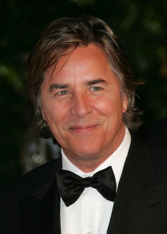
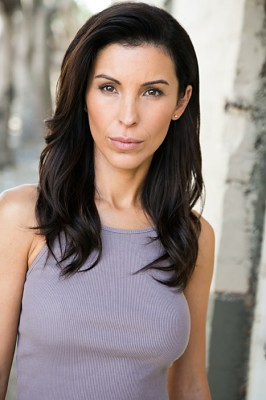
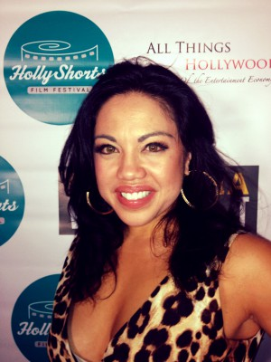

#945 Die Schadenfreundinnen
Alternativ: The Other Woman
 gesehen am 27.04.2015
gesehen am 27.04.2015

 IMDB-Wertung: 6.0 / 10
IMDB-Wertung: 6.0 / 10  Metascore: 39
Metascore: 39 
Carly muss feststellen, dass ihr neuer Freund Mark ein Betrüger ist, denn durch Zufall trifft sie auf Kate, seine Ehefrau. Plötzlich ist Carly diejenige, die Kate Trost spendet und somit entsteht eine ungewöhnliche Freundschaft. Diese verfestigt sich, als die Frauen herausfinden, dass Mark sie beide mit einer weiteren Frau betrügt - Amber. Die drei Frauen schließen sich zusammen und schmieden einen ungeheuerlichen Plan, um sich an Mark zu rächen.
Jahr: 2014
Dauer: 109 Minuten
FSK: 6
Land: USA Studio: 20th Century FoxTonspuren:
Untertitel: Deutsch,
Auflösung: 720p (1280x536) Größe: 2355 MB
Genre: Komödie, Liebe
Regisseur:  Nick Cassavetes
Nick Cassavetes
Drehbuch: Melissa Stack
Soundtrack: Aaron Zigman
Darsteller:
 Cameron Diaz als Carly Whitten
Cameron Diaz als Carly Whitten Leslie Mann als Kate King
Leslie Mann als Kate King Nikolaj Coster-Waldau als Mark King
Nikolaj Coster-Waldau als Mark King-  Don Johnson als Frank
- Kate Upton als Amber
- Taylor Kinney als Phil
- Nicki Minaj als Lydia
 Kenneth Maharaj als Busboy
Kenneth Maharaj als Busboy Alyshia Ochse als Cece
Alyshia Ochse als Cece Victor Cruz als Fernando
Victor Cruz als Fernando- Madison McKinley als Waitress
 David Thornton als Nick
David Thornton als Nick- Olivia Culpo als Raven-Haired Beauty
- Chelsea Turnbo als Receptionist
- Brooke Stacy Mills als Woman at Deli
- Raushanah Simmons als Woman Buying Coffee
- Cheryl Horne als Woman in Restroom
- Virginia Cassavetes als Legal Secretary
-  Nancy De Mayo als Legal Secretary
- Jennifer Lee Crowl als Shopper
- Daniel Reton als Investor
 Craig Castaldo als Radioman
Craig Castaldo als Radioman- Brittany Binger als Hot Girl
- Ashley Cusato als Hot Girl
- Nicole Domecus als Hot Girl
- Jessica Shea Alverson als Club Goer , uncredited
 Dan Bilzerian als Handsome Man at Bar , uncredited
Dan Bilzerian als Handsome Man at Bar , uncredited- Alissa Bourne als Upscale Bar Patron , uncredited
- Michael Carey als Background , uncredited
 Alan Davis als Investor Dinner Guest , uncredited
Alan Davis als Investor Dinner Guest , uncredited- Jedidiah Dore als Pedestrian , uncredited
- Ariel Fulmer als Club Girl , uncredited
- Katie Gell als Club Goer , uncredited
- Nadir Hasan als Downtown Patron , uncredited
- Shana Kaplan als Woman Attending Banquet at Waldorf Astoria , uncredited
- Fukumi Kashiwagi als Massage Girl , uncredited
- London Elise Kress als Beautiful Woman , uncredited
- Jeremy Michaels als Restaurant Patron , uncredited
- Yana Milanberg als Lounge Bar Visitor , uncredited
-  Maria-Christina Oliveras als Hotel Maid , uncredited
- Carolyn Ormond als Waldorf Wife , uncredited
 Shade Rupe als Black Tie Waldorf-Astoria Patron , uncredited
Shade Rupe als Black Tie Waldorf-Astoria Patron , uncredited- Elizabeth Saint als Hip Restaurant Patron , uncredited
 Leetopher Scott als Restaurant Patron , uncredited
Leetopher Scott als Restaurant Patron , uncredited- Brenna Gwyn Snowe als Club Goer , uncredited
- Uzimann als Tourist , uncredited
- Chris Victor als Upscale Bar Patron , uncredited
- Stefano Villabona als Restaurant Patron , uncredited
- Emilio Vitolo als Waiter , uncredited
- Xiren Wang als Waitress , uncredited
Datei: X:\2014(N-Z)\Schadenfreundinnen, Die (2014, FSK6, 1280x536).mkv seit 26.04.2015
Festplatte: HD 2013(I-Z)-2014(A-Z)
 Es gibt insgesamt 163 Filme in der Gruppe '2014(N-Z)'
Es gibt insgesamt 163 Filme in der Gruppe '2014(N-Z)'